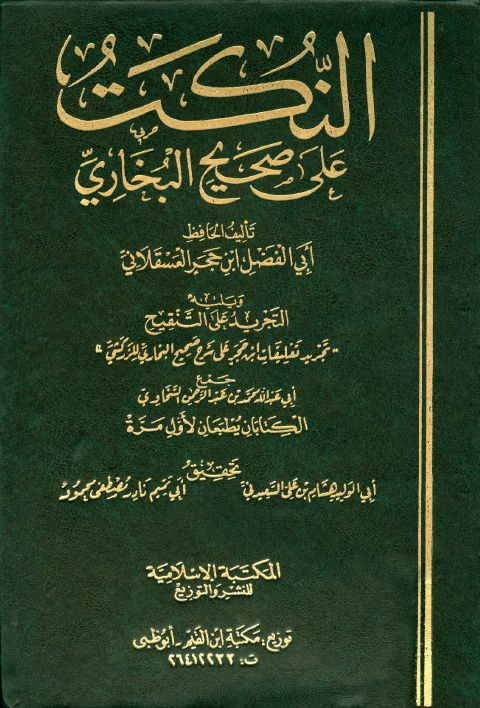

Downloads need an internet connection.
النكت على صحيح البخاري ويليه التجريد على التنقيح
Authors: أحمد بن علي بن حجر العسقلاني
Editors: هشام بن علي السعيدني نادر مصطفى محمود
Publishers: المكتبة الإسلامية للنشر والتوزيع
**▫️ العنوان: النكت على صحيح البخاري ويليه التجريد على التنقيح** ▪️ المؤلف: #أحمد_بن_علي_بن_حجر_العسقلاني ▫️ المحقق: #هشام_بن_علي_السعيدني • #نادر_مصطفى_محمود ▪️ الناشر: #المكتبة_الإسلامية_للنشر_والتوزيع ▫️ تاريخ النشر: 1426هـ 2005م ▪️ بلد النشر: القاهرة، #مصر ▫️ الطبعة: 1 ▪️ عدد الأجزاء: 2 ▫️ الصفحات: 736 ▪️ نوع الوعاء: #كتاب ▫️ التصنيف الرئيسي: #الحديث_وعلومه ۪